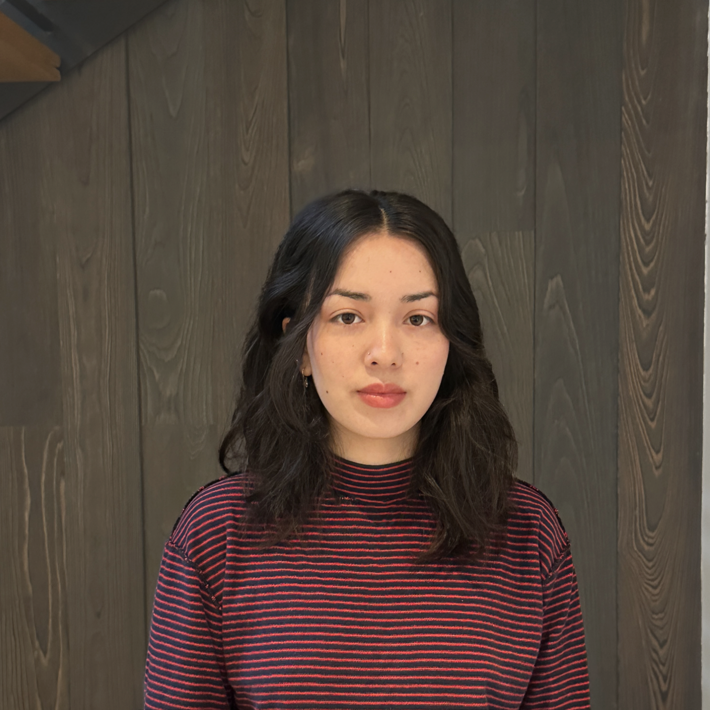

Ellen Kuwamoto is an artist working between the world as she imagines it and the awkward reality she inhabits. Her paintings depict simple yet lifelike figures with oversized features that evoke nostalgia for children’s cartoons, their frozen, outward gaze pulling the viewer into atmospheric and often moody environments. Recognizable elements such as clothing logos give unexpected context to these dreamlike scenes. Her multimedia work carries this same thread across sculpture and digital imagery populated with objects from everyday life. Toys, soda, and phones are incorporated into inventive and uncanny characters, giving form to the associations and personalities projected onto familiar things. Throughout, her work is bold and sometimes flashy, while equally sensitive and contained.
Ellen’s style is informed by her mixed Japanese American heritage and an ongoing interest in East Asian philosophy, folklore, and ancient art. Having grown up in San Francisco with a sense of her cultural history being just out of reach, she is drawn to studying these older worldviews and questioning what remains relevant. The careful depiction of contemporary symbols throughout her work reflects a similar level of scrutiny toward ever-changing American culture and a tendency to approach her surroundings with curiosity rather than taking them at face value.
Now based in Brooklyn, Ellen earned her BFA with honors in Interactive Media Arts and a minor in Studio Art from NYU Tisch in 2026. She was selected for NYU Shanghai’s Porcelain Capital Immersion Study in China, where her work was exhibited at the Luxun Gallery. She also completed a Concentration in Art Business at Sotheby’s Institute of Art in London. Her experience working at a 3D fabrication studio, photo lab, gallery, and ceramics studio has further deepened her curiosity about the ways images and objects are made, circulated, and given meaning.